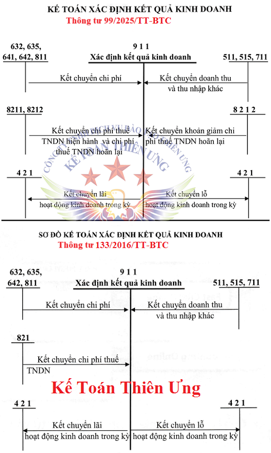
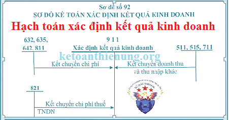

Hướng dẫn cách hạch toán xác định kết quả kinh doanh - Tài khoản 911 áp dụng chế độ kế toán theo Thông tư 99/2025/TT-BTC mới nhất 2026, xác định và phản ánh kết quả hoạt động kinh doanh trong 1 kỳ kế toán, cách hạch toán các bút toán kết chuyển cuối kỳ trong Doanh nghiệp.
1. Tài khoản 911 - Xác định kết quả kinh doanh:
- Dùng để xác định và phản ánh kết quả hoạt động kinh doanh và các hoạt động khác của doanh nghiệp trong một kỳ kế toán.
- Kết quả hoạt động kinh doanh của doanh nghiệp bao gồm: Kết quả hoạt động sản xuất, kinh doanh; Kết quả hoạt động tài chính và kết quả hoạt động khác.
- Kết quả hoạt động sản xuất, kinh doanh là số chênh lệch giữa doanh thu thuần và trị giá vốn hàng bán (gồm cả sản phẩm, hàng hóa, bất động sản đầu tư và dịch vụ, giá thành sản xuất của sản phẩm xây lắp, chi phí liên quan đến hoạt động kinh doanh bất động sản đầu tư, như: chi phí khấu hao, chi phí sửa chữa, nâng cấp, chi phí cho thuê hoạt động, chi phí thanh lý, nhượng bán bất động sản đầu tư), chi phí bán hàng và chi phí quản lý doanh nghiệp.
- Kết quả hoạt động tài chính là số chênh lệch giữa thu nhập của hoạt động tài chính và chi phí hoạt động tài chính.
- Kết quả hoạt động khác là số chênh lệch giữa các khoản thu nhập khác và các khoản chi phí khác và chi phí thuế thu nhập doanh nghiệp.
SƠ ĐỒ CHỮ T HẠCH TOÁN TÀI KHOẢN 911

2. Kết cấu và nội dung Tài khoản 911
|
Bên Nợ |
Bên Có |
|
- Kết chuyển trị giá vốn của sản phẩm, hàng hóa và dịch vụ đã bán;
- Kết chuyển phần chênh lệch giữa giá bán nhỏ hơn giá trị còn lại và chi phí bán, thanh lý BĐSĐT;
- Kết chuyển chi phí tài chính, chi phí bán hàng, chi phí quản lý doanh nghiệp và chi phí khác; - Kết chuyển chi phí thuế thu nhập doanh nghiệp; - Kết chuyển lãi. |
- Kết chuyển Doanh thu thuần về số sản phẩm, hàng hóa và dịch vụ đã bán trong kỳ;
- Kết chuyển phần chênh lệch giữa giá bán lớn hơn giá trị còn lại và chi phí bán, thanh lý BĐSĐT;
- Kết chuyển Doanh thu hoạt động tài chính, các khoản thu nhập khác ; - Kết chuyển lỗ. |
| Tài khoản 911 không có số dư cuối kỳ | |
3. Hạch toán xác định kết quả kinh doanh 1 số nghiệp vụ:
| Hạch toán kết chuyển Doanh thu |
|
a) Cuối kỳ kế toán, thực hiện việc kết chuyển số doanh thu bán hàng thuần, doanh thu bán BĐSĐT vào tài khoản 911 để Xác định kết quả kinh doanh, ghi: Nợ TK 511 - Doanh thu bán hàng và cung cấp dịch vụ Có TK 911 - Xác định kết quả kinh doanh. |
|
b) Cuối kỳ kế toán, kết chuyển doanh thu hoạt động tài chính và các khoản thu nhập khác, ghi: Nợ TK 515 - Doanh thu hoạt động tài chính Nợ TK 711 - Thu nhập khác Có TK 911 - Xác định kết quả kinh doanh. |
| Hạch toán kết chuyển chi phí |
|
c) Kết chuyển trị giá vốn của sản phẩm, hàng hóa, dịch vụ đã tiêu thụ trong kỳ, chi phí liên quan đến hoạt động kinh doanh BĐSĐT, như chi phí khấu hao, chi phí sửa chữa, nâng cấp, chi phí cho thuê hoạt động, giá trị còn lại và chi phí thanh lý nhượng bán BĐSĐT, ghi: Nợ TK 911 - Xác định kết quả kinh doanh Có TK 632 - Giá vốn hàng bán. |
|
d) Tại thời điểm kết thúc kỳ kế toán, kết chuyển chi phí hoạt động tài chính và các khoản chi phí khác, ghi: Nợ TK 911 - Xác định kết quả kinh doanh Có TK 635 - Chi phí tài chính Có TK 811 - Chi phí khác. |
|
đ) Tại thời điểm kết thúc kỳ kế toán, kết chuyển chi phí bán hàng và quản lý doanh nghiệp phát sinh trong kỳ, ghi: Nợ TK 911 - Xác định kết quả kinh doanh Có TK 641, 642 - (Nếu theo Thông tư 99) Có TK 6421, 6422 - (Nếu theo Thông tư 133) |
|
e) Tại thời điểm kết thúc kỳ kế toán, kết chuyển chi phí thuế thu nhập doanh nghiệp hiện hành, ghi: Nợ TK 911 - Xác định kết quả kinh doanh Có TK 8211 - Chi phí thuế thu nhập doanh nghiệp hiện hành. |
|
g) Tại thời điểm kết thúc kỳ kế toán, kết chuyển số chênh lệch giữa số phát sinh bên Nợ và số phát sinh bên Có Tài khoản 8212 - Chi phí thuế thu nhập hoãn lại: - Nếu có số phát sinh bên Nợ Tài khoản 8212 lớn hơn số phát sinh bên Có Tài khoản 8212, thì kết chuyển số chênh lệch, ghi: Nợ TK 911 - Xác định kết quả kinh doanh Có TK 8212 - Chi phí thuế thu nhập hoãn lại. - Nếu số phát sinh Nợ Tài khoản 8212 nhỏ hơn số phát sinh Có Tài khoản 8212, thì kết chuyển số chênh lệch, ghi: Nợ TK 8212 - Chi phí thuế thu nhập doanh nghiệp hoãn lại Có TK 911 - Xác định kết quả kinh doanh. |
| Hạch toán kết chuyển lãi lỗ cuối năm: |
|
h) Kết chuyển kết quả hoạt động kinh doanh trong kỳ vào lợi nhuận sau thuế chưa phân phối: - Kết chuyển lãi, ghi: Nợ TK 911 - Xác định kết quả kinh doanh Có TK 421 - Lợi nhuận sau thuế chưa phân phối. - Kết chuyển lỗ, ghi: Nợ TK 421 - Lợi nhuận sau thuế chưa phân phối Có TK 911 - Xác định kết quả kinh doanh. |
|
i) Ngoài ra với các doanh nghiệp áp dụng chế độ kế toán theo Thông tư 99: - Kết chuyển lãi, ghi: Nợ TK 911 - Xác định kết quả kinh doanh Có TK 336 - Phải trả nội bộ. - Kết chuyển lỗ, ghi: Nợ TK 336 - Phải trả nội bộ Có TK 911 - Xác định kết quả kinh doanh. |
Xem thêm: Hạch toán các bút toán kết chuyển cuối kỳ
--------------------------------------------------------------------------------
Kế toán Diệu Tâm các bạn làm tốt công việc kế toán !
Nếu bạn muốn học cách kê khai thuế GTGT, TNCN tháng/quý, cách hạch toán sổ sách, Lương, BHXH, xác định chi phí được trừ - không được trừ, cân đối lãi lỗ, lên báo cáo tài chính, quyết toán thuế TNCN, TNDN cuối năm ... có thể tham gia Khóa học kế toán thực hành tổng hợp.
--------------------------------------------------------------------
